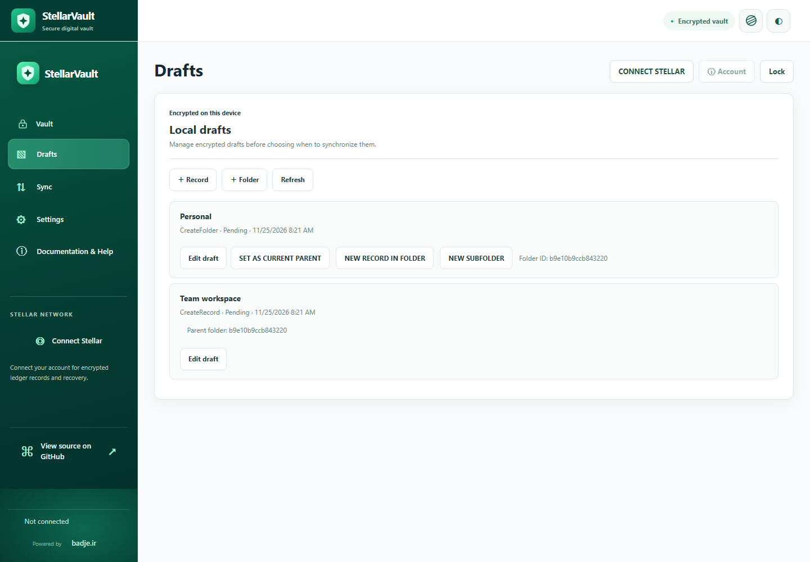
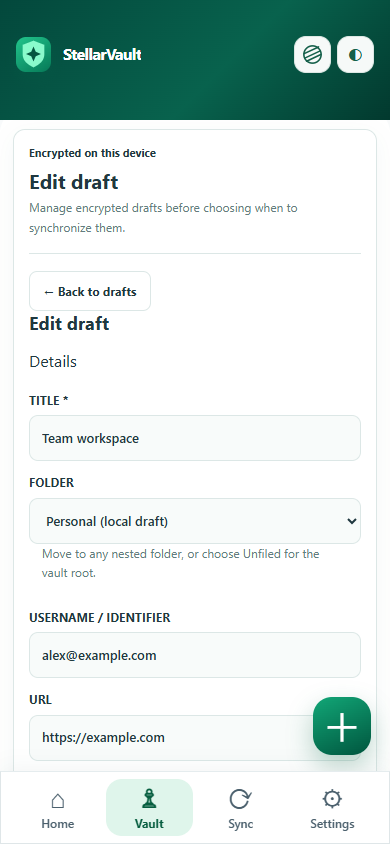

Open an encrypted vault
Select Stellar testnet, public network or a custom network, then choose mnemonic-based HD access or imported S-key access with independently linked accounts.
SVAULT is an encrypted Stellar-backed data vault by Badje. It encrypts sensitive records in the browser, shows the ledger impact before signing, and provides transaction references for inspecting activity on the selected Stellar network.


On-chain only: Choose a BIP-39 recovery phrase with deterministic HD accounts, or an imported Stellar S-key with independently linked accounts. No separate local vault passphrase or saved mnemonic is required; Stellar access requires a network connection.
Encrypted on-device: Explicitly opt in to locally retained encrypted credentials and vault data, protected by a separate passphrase. Encrypted offline drafts and manual, fee-reviewed synchronization are implemented; release validation is still in progress. Nothing synchronizes automatically.
Stellar operations can incur network fees and account reserves. Unsynchronized device-only data can be lost if browser storage is cleared or the device fails.
SVAULT is designed around clear user actions: choosing a network, opening the encrypted database, adding or editing records, reviewing the ledger cost, approving the action, and keeping a result you can track later.
Select Stellar testnet, public network or a custom network, then choose mnemonic-based HD access or imported S-key access with independently linked accounts.
Manage encrypted records and folders. Direct file uploads are limited to 1 MiB; opt-in encrypted local storage supports staged streaming file trees. Whole-tree deletion is still under development.
Record content is encrypted in the browser before chunks are prepared for the selected Stellar environment.
A dedicated approval screen shows fee, reserve change, operations, chunks and record delta before anything is signed.
After a successful commit, SVAULT shows the transaction hash and commit state so the action can be referenced and, where applicable, independently inspected.
The interface is responsive, installable as a progressive web app, and intentionally shaped to feel stable across desktop and mobile devices.
Networks: testnet, public, custom
Data types: structured records, folders and encrypted files
Core actions: open, browse, add, update, approve, commit
Security flow: encrypt → estimate → approve → sign
Verification: transaction hash and ledger-backed operation trail
Platform: browser-based PWA by Badje
StellarVault uses VaultEngine with a Stellar provider. The authenticated HTTP API currently provides read-only network and transaction receipt diagnostics, including operator-configured customer Stellar networks with an expected network passphrase. Signing keys stay with the client.
Hosted record and file writes are not available through the API yet. EVM support and native app releases are planned; the browser PWA is the current application.
You can think of a blockchain as a continuously ordered ledger kept by multiple computers. The network agrees on valid signed operations, so the transaction history is not locked inside only one private server or one browser session.
Multiple nodes keep aligned copies of the ledger. That means the transaction history does not exist only inside one product interface.
Recorded operations are signed by an account key. From the ledger, it is possible to inspect which account authorized the transaction.
Transactions are ordered through network agreement. Replacing earlier history without leaving evidence becomes far more difficult.
A blockchain does not automatically make information private. SVAULT uses local encryption for confidentiality and uses a distributed ledger for signed, traceable history.
The flow is simple: choose the Stellar environment, manage encrypted records, inspect the operation details and approve only when you are confident.
Connect to Stellar testnet, public or a custom network, then choose a BIP-39 recovery phrase or imported Stellar S-key. These are separate account strategies.
Network + account strategyEnter record details, organize folders, or select a file. Encryption, chunk preparation and transaction building happen inside the app flow.
Local encryptionBefore commit, you can review reserve changes, operations, chunk count and record impact; only then is the action signed and submitted.
Explicit approvalSVAULT is designed and developed by Badje. The app uses Stellar accounts, signed transactions, fees and ledger entries to store and reconstruct encrypted record chunks, and it can connect to testnet, the public network or a custom network.
Read the official Stellar introduction ↗Development and testing
Stellar public network
Private or self-hosted network
SVAULT combines local browser encryption, separate mnemonic HD or imported S-key access and optional encrypted device storage, chunked ledger storage and a final approval screen. Security still depends on protecting the recovery phrase, local passphrase (if enabled), the device, the browser and the chosen network.
Record content is encrypted in the browser before it is turned into ledger chunks or sent to the selected network.
On-chain-only access keeps signing credentials in memory. Optional encrypted device storage can retain an encrypted recovery phrase protected by a separate vault passphrase.
The app shows fee, reserve change, operation count, chunk count and record delta in a dedicated review interface before submission.
Signed Stellar transactions create an inspectable trail, and the transaction hash becomes an independent reference for the final action.
Security note: SVAULT cannot recover a lost BIP-39 recovery phrase and cannot fully protect against a compromised device, a malicious browser extension or an unsafe custom network. Keep backups offline and verify the selected network before approval.
What does the blockchain do, what does SVAULT encrypt, and what should the user still protect?
A blockchain is a shared, ordered ledger maintained by multiple participants. Signed transactions become part of a history that can be checked independently of the app.
No. SVAULT encrypts record content before ledger chunks are prepared. The network receives encrypted data and transaction information, not the readable secret or note that was typed into the form.
SVAULT is a Badje product. It uses Stellar as the account, transaction and ledger layer and supports testnet, the public network and custom network connections.
Protect your recovery phrase or imported Stellar secret key, any separate local vault passphrase, your device and backups. Losing the recovery phrase may permanently prevent access to on-chain vault records.
A transaction hash lets you inspect a receipt using a trusted explorer or Horizon endpoint. A successful receipt alone does not prove complete encrypted record publication. Uncertain submissions require manual review and are never blindly retried.
Badje is building SVAULT. The project is open to investor conversations, strategic partnerships, technical collaboration, security review and voluntary financial support.
Badje is the product brand and development team behind SVAULT. We welcome conversations with investors, organizations interested in pilots, security specialists, members of the Stellar ecosystem and people who want to help the product move faster.
Visit badje.ir ↗If you want to discuss investment, a pilot deployment, product partnership or ecosystem collaboration, contact the founder directly.
Discuss collaborationVoluntary support can help cover infrastructure, design, security review, documentation and continued development. Email us to receive the current support options.
Support the projectOpen SVAULT in a modern browser and choose the Stellar environment that matches your use case.
Open app.svault.ir